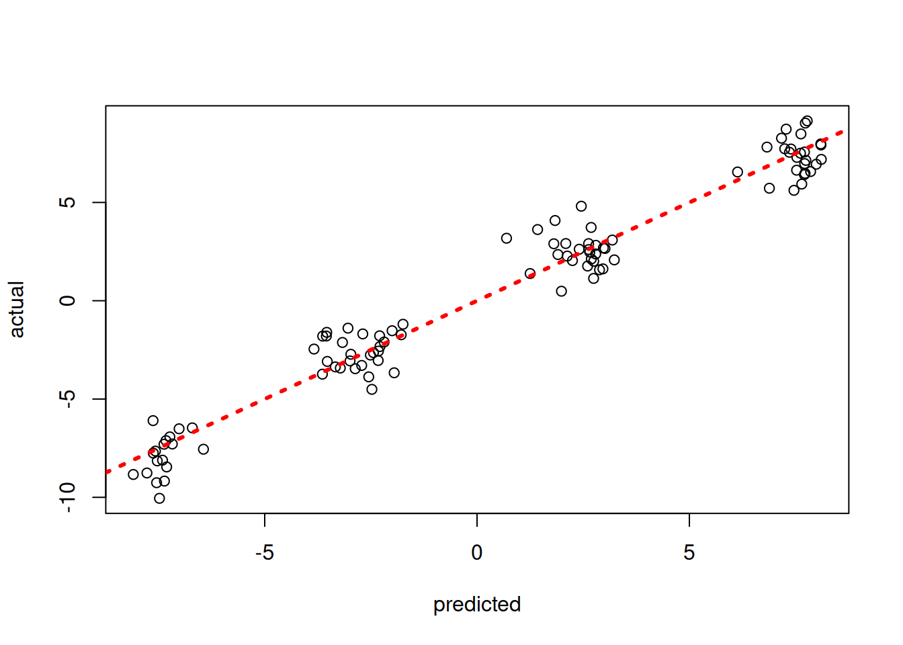
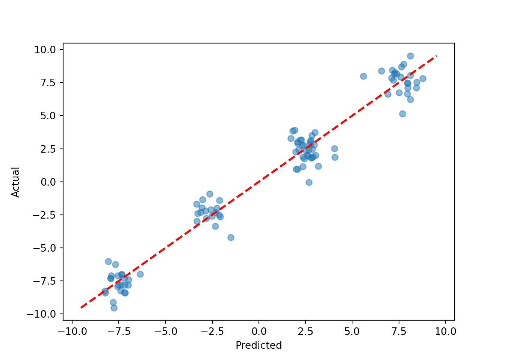
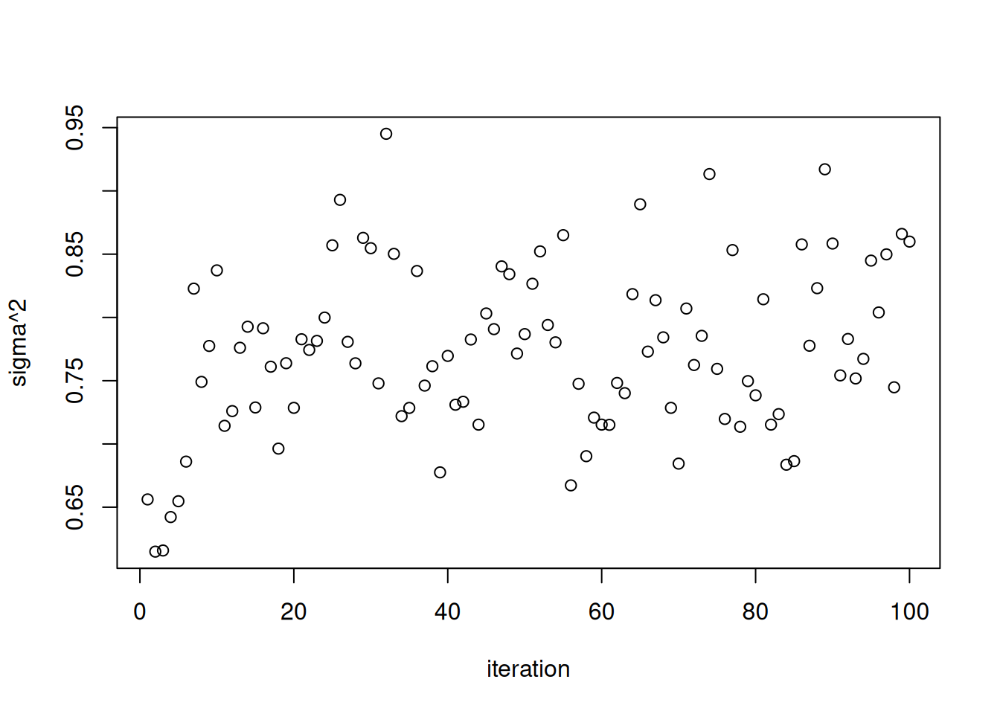
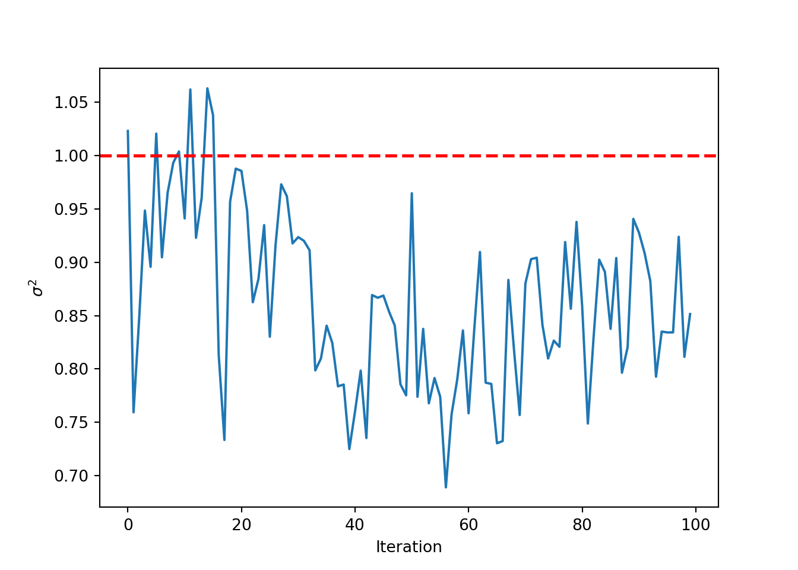

library(stochtree)Calibrating Leaf Node Scale Parameter Priors
This vignette demonstrates prior calibration approaches for the parametric components of stochastic tree ensembles (Chipman et al. (2010)).
Background
The “classic” BART model of Chipman et al. (2010)
\[\begin{equation*} \begin{aligned} y &= f(X) + \epsilon\\ f(X) &\sim \text{BART}\left(\alpha, \beta\right)\\ \epsilon &\sim \mathcal{N}\left(0,\sigma^2\right)\\ \sigma^2 &\sim \text{IG}\left(a,b\right) \end{aligned} \end{equation*}\]
is semiparametric, with a nonparametric tree ensemble \(f(X)\) and a homoskedastic error variance parameter \(\sigma^2\). Note that in Chipman et al. (2010), \(a\) and \(b\) are parameterized with \(a = \frac{\nu}{2}\) and \(b = \frac{\nu\lambda}{2}\).
Setting Priors on Variance Parameters in stochtree
By default, stochtree employs a Jeffreys’ prior for \(\sigma^2\) \[\begin{equation*}
\begin{aligned}
\sigma^2 &\propto \frac{1}{\sigma^2}
\end{aligned}
\end{equation*}\] which corresponds to an improper prior with \(a = 0\) and \(b = 0\).
We provide convenience functions for users wishing to set the \(\sigma^2\) prior as in Chipman et al. (2010). In this case, \(\nu\) is set by default to 3 and \(\lambda\) is calibrated as follows:
- An “overestimate,” \(\hat{\sigma}^2\), of \(\sigma^2\) is obtained via simple linear regression of \(y\) on \(X\)
- \(\lambda\) is chosen to ensure that \(p(\sigma^2 < \hat{\sigma}^2) = q\) for some value \(q\), typically set to a default value of 0.9.
Setup
Load the necessary packages
import numpy as np
import matplotlib.pyplot as plt
from stochtree import BARTModel, calibrate_global_error_varianceSet a seed for reproducibility
random_seed <- 1234
set.seed(random_seed)random_seed = 1234
rng = np.random.default_rng(random_seed)Data Generation
Generate data for a straightforward supervised learning problem
n <- 500
p <- 5
X <- matrix(runif(n*p), ncol = p)
f_XW <- (
((0 <= X[,1]) & (0.25 > X[,1])) * (-7.5) +
((0.25 <= X[,1]) & (0.5 > X[,1])) * (-2.5) +
((0.5 <= X[,1]) & (0.75 > X[,1])) * (2.5) +
((0.75 <= X[,1]) & (1 > X[,1])) * (7.5)
)
noise_sd <- 1
y <- f_XW + rnorm(n, 0, noise_sd)n = 500
p = 5
X = rng.uniform(size=(n, p))
f_XW = (
((X[:, 0] >= 0) & (X[:, 0] < 0.25)) * (-7.5) +
((X[:, 0] >= 0.25) & (X[:, 0] < 0.5)) * (-2.5) +
((X[:, 0] >= 0.5) & (X[:, 0] < 0.75)) * (2.5) +
((X[:, 0] >= 0.75) & (X[:, 0] < 1.0)) * (7.5)
)
noise_sd = 1.0
y = f_XW + rng.normal(0, noise_sd, n)Split into train and test set
test_set_pct <- 0.2
n_test <- round(test_set_pct*n)
n_train <- n - n_test
test_inds <- sort(sample(1:n, n_test, replace = FALSE))
train_inds <- (1:n)[!((1:n) %in% test_inds)]
X_test <- X[test_inds,]
X_train <- X[train_inds,]
y_test <- y[test_inds]
y_train <- y[train_inds]test_set_pct = 0.2
n_test = round(test_set_pct * n)
n_train = n - n_test
test_inds = rng.choice(n, n_test, replace=False)
train_inds = np.setdiff1d(np.arange(n), test_inds)
X_test = X[test_inds]
X_train = X[train_inds]
y_test = y[test_inds]
y_train = y[train_inds]Model Sampling
First, we calibrate the scale parameter for the variance term as in Chipman et al (2010)
nu <- 3
lambda <- calibrateInverseGammaErrorVariance(y_train, X_train, nu = nu)nu = 3
lambda_ = calibrate_global_error_variance(X_train, y_train, nu=nu)Then, we run a BART model with this variance parameterization
general_params <- list(sigma2_global_shape = nu/2, sigma2_global_scale = (nu*lambda)/2)
bart_model <- bart(X_train = X_train, y_train = y_train, X_test = X_test,
num_gfr = 0, num_burnin = 1000, num_mcmc = 100,
general_params = general_params)bart_model = BARTModel()
bart_model.sample(
X_train=X_train, y_train=y_train, X_test=X_test,
num_gfr=0, num_burnin=1000, num_mcmc=100,
general_params={
"num_threads": 1,
"sigma2_global_shape": nu / 2,
"sigma2_global_scale": (nu * lambda_) / 2,
},
)Inspect the out-of-sample predictions of the model
plot(rowMeans(bart_model$y_hat_test), y_test, xlab = "predicted", ylab = "actual")
abline(0,1,col="red",lty=3,lwd=3)
pred_mean = bart_model.y_hat_test.mean(axis=1)
lo = min(pred_mean.min(), y_test.min())
hi = max(pred_mean.max(), y_test.max())
plt.scatter(pred_mean, y_test, alpha=0.5)
plt.plot([lo, hi], [lo, hi], color="red", linestyle="dashed", linewidth=2)
plt.xlabel("Predicted")
plt.ylabel("Actual")
plt.show()
Inspect the posterior samples of \(\sigma^2\)
plot(bart_model$sigma2_global_samples, ylab = "sigma^2", xlab = "iteration")
abline(h = noise_sd^2, col = "red", lty = 3, lwd = 3)
plt.plot(bart_model.global_var_samples)
plt.xlabel("Iteration")
plt.ylabel(r"$\sigma^2$")
plt.axhline(noise_sd**2, color="red", linestyle="dashed", linewidth=2)
plt.show()
References
Chipman, Hugh A., Edward I. George, and Robert E. McCulloch. 2010. “BART: Bayesian additive regression trees.” The Annals of Applied Statistics 4 (1): 266–98. https://doi.org/10.1214/09-AOAS285.